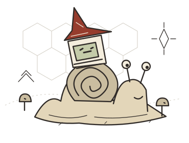

Market Monster ↗
FBA shipment prep, inventory, and profit tracking for Amazon sellers. Co-founded and in private beta, with an MCP server for AI agents and a little Rust app that prints the labels.
Next.js · TypeScript · Postgres · MCP · Rust
Engineer. Tinkerer. Occasional party support.
I make software for the real world and tools for imaginary ones. Twenty-plus years across healthcare, government, and commercial work — with plenty of tabletop adventures along the way.

FBA shipment prep, inventory, and profit tracking for Amazon sellers. Co-founded and in private beta, with an MCP server for AI agents and a little Rust app that prints the labels.
AI-generated adventures, items, and campaign content inside the gameplay workflow. Multiple providers, usage controls, and workers keep the machinery behind the curtain.
A Rust terminal utility that turns MIDI input into keyboard events and macros. A different way to put a controller to work.
A Foundry VTT module that brings Google Maps into the map-making workflow. Real geography, ready for tabletop adventures.
A Rust MCP server that lets Claude Code hand a task to an agent on any of several LLM providers, with every command the agent runs jailed in a sandbox.
A Rust prototype exploring AI recommendations and content generation as part of an actual product workflow.
Apr 2026 — Present
Co-Founder & Lead Engineer
Co-founded a two-person company building inbound-shipment, inventory, and profitability tools for Amazon sellers, now in private beta. Leading engineering on the Amazon Selling Partner API integration, background workers, an MCP server and REST API built for AI agents, and a small Rust app for silent label printing.
Feb 2021 — Apr 2026
Full-Stack Software Engineer
Built Rust and TypeScript products end-to-end, from user workflows to backend services and AI integrations. Internal tools made prompts and generation pipelines easier to test and iterate.
Aug 2018 — Jan 2021
Senior Software Engineer · Remote contract
Java APIs and Angular / React interfaces for healthcare software. Worked with product and operations teams to connect multiple vendor systems into coherent clinical workflows.
Mar 2017 — Aug 2018
Planned sabbatical
Feb 2012 — Mar 2017
Analyst / Programmer IV
Owned in-season software for a major wild salmon fishery, supporting accurate reporting and clear information for internal teams and public communications under time pressure.
2005 — 2010
Unix Configuration Specialist
Maintained WebLogic infrastructure across mixed operating systems, automated brittle manual tasks, and worked through production deployment and reliability problems.
Earlier chapters
Wostmann & Associates, Inc. · Associate Consultant II · May 2010–2011. Migration of a production application from WebSphere 5.1 to WebSphere 7.
2000–2005: Programmer / analyst roles at MIKA Systems Inc., SageGroup LLC, and Integrity Solutions Inc.
Rust, TypeScript, Java, Python, Next.js, React, Angular, Axum, Actix, and SQLx.
Multi-provider LLMs, MCP servers, local inference, agent orchestration, and async workers.
PostgreSQL, Supabase, APIs, usage controls, architecture, observability, and production troubleshooting.
The next thing starts with a conversation.
Open to AI, senior full-stack, and platform roles. Fully remote (US).
mspellecacy@frakle.com